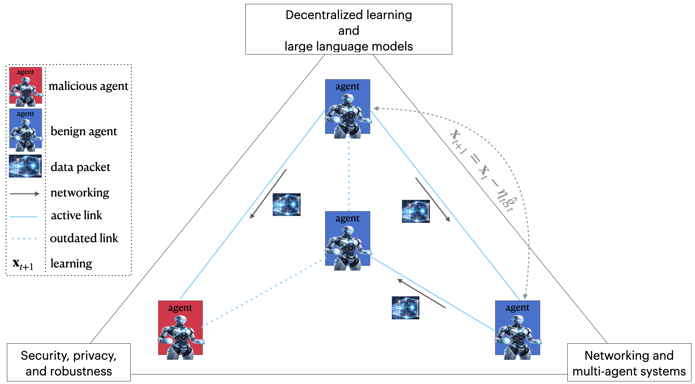

|
Research Overview
Research Interests

My research explores the information-theoretic foundations and algorithm design for decentralized networked systems, with a focus on:
- networking and multi-agent systems;
- distributed information processing and decentralized learning;
- security, privacy, and robustness.
I contribute to several research communities. My home communities are information theory and networking, and I also maintain strong ties to machine learning and to security and privacy communities.
Fundamental Mathematical Tools: Information Theorey, Stochastic Processes, Distributed Optimization, Reinforcement Learning.
Research Grants
Young Scientists Fund of the NSFC (Grant No. 62401111), "Freshness-oriented decentralized random access theory and algorithms"
Funding Agency: National Natural Science Foundation of China
Role: Solo PI
Dates: 2025.01 - 2027.12
Fundamental Research Funds for the Central Universities (Grant No. ZYGX2024XJ001), "Research on Decentralized Random Access Protocols for Information Freshness"
Funding Agency: Ministry of Education of China
Role: Solo PI
Dates: 2024.09 - 2026.08
|